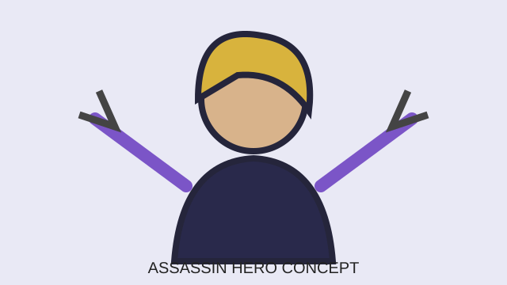

Mobile Legends: Bang Bang
Mobile Legends is one of the games I enjoy playing. It is a multiplayer online battle arena game where teamwork, strategy, and practice are important.
Fanny: My Favorite Assassin

Fanny is my favorite hero in Mobile Legends. She belongs to the Assassin role and is known for her high mobility. Using her cables takes practice, good timing, and a strong understanding of the map. I enjoy using her because mastering her skills is challenging and rewarding.
Tips for Improving Your Gameplay
- Learn the skills and abilities of your chosen hero.
- Practice your controls and timing.
- Check the map and be aware of your teammates.
- Communicate and cooperate with your team.
- Learn from mistakes and keep practicing.